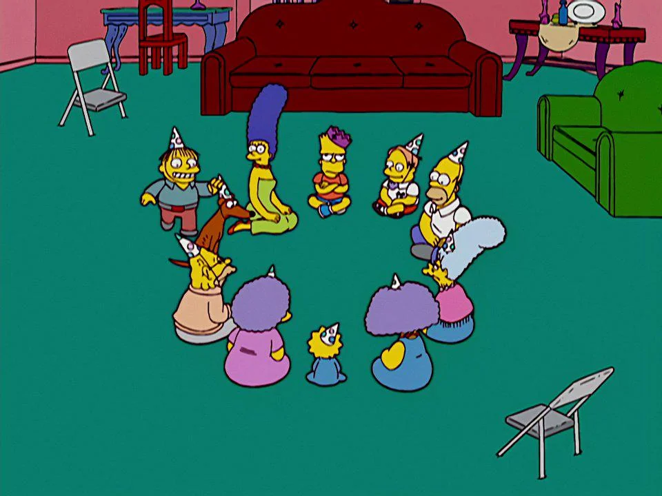

Implementing a Ralph Loop with Cursor CLI
Building an autonomous agent loop and analyzing usage costs
duck, duck, duck, duck, duck, duck ...

Some weeks ago I encountered the famous Geoffrey Huntley blog post: "Ralph Wiggum as a software engineer" and, like many others, I've been fascinated by the concept. To me it really seems just a matter of time (and obvious) that something like Ralph Loop should come around; what I didn't expect was that a solution as simple as that could achieve results that good.
Some days passed... until YouTube videos where people claimed to be able to create MVPs of entire projects with this method started to pop up.
What finally convinced me was a friend of mine who, during a phone call, told me how big a part of his job (as a software developer for a big company) was actually solvable with this method.
I took that as a sign and I noted in my todo list to try to implement my own Ralph Loop.
First approach
After re-reading the Geoffrey post I started surfing the internet for more information and almost immediately I encountered the Pocock video regarding the subject.
I found it very illuminating, so I decided to take that as my starting point.
First things first: the most common implementations of Ralph Loops were based on Claude Code, but I didn't have an active plan back then. I had a Cursor plan though. So I started looking for a solution that could be implemented with that subscription to avoid activating multiple subscriptions each month (Netflix, Disney+... docet).
I found a Reddit topic with this solution posted. I tried to make it work on Windows, but I failed.
The time to act had come: Let's code!
My implementation of Ralph Loop based on Cursor CLI
The solution I came up with is based on the already cited Pocock video.
I tried to refine it and make it work with the Cursor CLI agent.
How it works
The Ralph Loop iterates N times, calling a new Cursor CLI instance (so a new context window) on each iteration, passing to the agent a prompt engineered to:
- check the current project status (via a
progress.txtfile updated on each iteration and the git history of the project) - search the next priority feature (ONLY ONE and not implemented yet) to develop from the product requirements document (e.g.
PRD.jsonfile) - test the new implemented feature and run the entire suite of tests of the project
- if all is ok, proceed to mark as 'Done' the implemented feature in the product requirements document, update the
progress.txtand commit the changes using git - terminate the loop if all the features have been implemented correctly (
COMPLETION_MARKER_IDin code base)
The loop is set to terminate after N iterations in case the project progress enters a loop (e.g. agents in different iterations loop on implementations and updates on the same project feature, or the path derails from the PRD for any other reason). It's just a safety choice to limit the number of agents to run (and not run a while(true) until the entire project is done).
A reasonable choice could be to set N to the number of features written in the PRD.json file.
The agent (Cursor CLI) invoked in the loop is run with multiple parameters which:
--forceparameter that allows the agent to run all kinds of commands--workspaceparameter to set the project working directory
(Run agent --help in terminal for a deeper understanding of the parameters.)
All the mentioned parameters can be configured during the ralph.sh launch (./ralph.sh --help can be helpful).
The full repo is here: cursor-ralph-loop.
To keep in mind
Ralph Loop works best with small, very deterministic tasks. Your main concern MUST be to write well-written and exhaustive features to implement, following the given PRD.json structure.
Small tasks will help to avoid context window rot/dumb zone since all the agents will start with a fresh context window each time.
The agents will choose the feature priority by themselves and not necessarily in the given order in the PRD.json.
The TESTS are way more important than the feature specifics: the agents will tend to consider features correctly implemented (even if they fail) unless well-written test requirements cover the feature. I've found it particularly helpful to write integration tests (more than unit tests) in this sense (thanks to this Anthropic post).
For a very small project I've found it enough to specify the project structure/guidelines in the requirements.md file, leaving the agent plenty of room for manoeuvre; a good way to handle this may be to include the specifics into the PRD.json file and be more pedantic about it.
A practical use case (Minimal Book Tracker)
Let's talk now about a realistic (extremely simple) use case and try to collect some data.
I chose to stress the Ralph Loop by implementing a very simple CLI CRUD program written in C. The domain is something like a library: the desired result allows the user to do operations such as viewing the list of books, inserting/deleting a book, and managing persistence.
You can find the example files here as reference.
How to - Windows
The general approach is to create a "sandbox" using Docker where our AI agents can operate freely without the risk of (in case of hallucinations or something) accessing unwanted files/resources.
To do so:
Install Docker Desktop
Run Docker Desktop via the GUI or, in a Windows terminal, type:
docker desktop startDownload the latest Ubuntu Docker image:
docker pull ubuntu:latestMake the root directory of our project. This will be our workspace and the Ralph Loop (Cursor CLI agents) will only see files in this scope. In a Windows terminal type:
mkdir C:\Projects\docker-ralph-workspace\minimal-book-tracker && cd C:\Projects\docker-ralph-workspace\minimal-book-trackerDownload the repo from git containing the code and delete the .git versioning internal repo: this code is meant to live as a subdirectory of your project, not as the project itself.
git clone --depth 1 https://github.com/borgoo/cursor-ralph-loop.git && rmdir /s /q cursor-ralph-loop\.gitIMPORTANT NOTE
The cloned repo is already set up to allow the creation of the Minimal Book Tracker project. To use it for your own project you need to change the content of the support files before proceeding; especially the Dockerfile. The downloaded one is set up for the creation of an Ubuntu image with the bare minimum tools necessary for the run of the Ralph Loop and the creation of a C23 coded project. Take a closer look at the #Dependency installation section in it and update it based on your specific requirements (e.g. some Python libraries...). Keep in mind that git and Cursor agent CLI are mandatory for Ralph Loop to work.
Now build a Docker image based on the Dockerfile specs:
docker build -t minimal-book-tracker-sandbox-image .Make the Docker container based on the created image and run it, tagging the root as the workspace directory:
docker run -it --name minimal-book-tracker-sandbox-container -v C:\Projects\docker-ralph-workspace\minimal-book-tracker:/workspace minimal-book-tracker-sandbox-image⚠️ CRUCIAL
After the container is built, a bash shell (Ubuntu terminal) starts (because of the Dockerfile configuration). From inside this terminal type agent and press Enter. This runs Cursor CLI as agent and, on first access, a login will be required. This step is mandatory to authorize the Ralph Loop to use the agent command in the code itself.
After authenticating in the browser you can close the agent interface in the terminal (Ctrl+C or exit).
Now that the container is created you can run multiple instances with the command (from Windows terminal):
docker exec -it minimal-book-tracker-sandbox-container bashNote: It can be helpful to run commands like tail -f thinking.tmp while the Ralph Loop is running (in another terminal) to monitor the agent's status in real time.
From now on it's just a matter of defining the content of the features in the PRD.json file in the most deterministic, test-driven way possible (integration tests especially). Then adjust the requirements.md with some high-level shared specs and that's it.
The Ralph Loop can be run from the container (Bash terminal) with, e.g.:
./ralph.sh requirements.md backlogs/PRD.json 30Some stats about the Minimal Book Tracker development with the Ralph Loop
Before starting this use case it took me something like a day of work to refine the agent prompt: making it fit a C project, handling one feature per iteration, and making sure that a feature is considered complete only when all tests still pass after the implementation. So I think this time should be accounted for when considering switching technologies or testing approaches.
Setup prompt specifically for the project: 8h
Then I started collecting high-level features by questioning another LLM about the project, then specifying the details and acceptance criteria for each identified feature. One or more unit tests were specified for each feature, and finally some cumulative integration tests were added to the list (in PRD.json). I also spent a little time writing the requirements.md file.
Populating PRD.json and requirements.md files: 1-2h
Given the simplicity of the project and to save tokens, the chosen model for the task was sonnet-4.5 on a Cursor PRO plan of $20/month.
The Ralph Loop was run multiple times with small iteration limits (10-ish against the ~25 features in the PRD.json) to monitor the progress and analyze the written code. I took some breaks during the process as well. Anyway...
Ralph Loop working time: 1h 30'
In the end, what everyone was waiting for!
from Cursor > Dashboard > Usage
| Date | Kind | Model | Max Mode | Input (w/ Cache Write) | Input (w/o Cache Write) | Cache Read | Output Tokens | Total Tokens | Cost ($) |
|---|---|---|---|---|---|---|---|---|---|
| 2026-02-04T11:27:45.187Z | Included | claude-4.5-sonnet | No | 24928 | 21 | 467313 | 2952 | 495214 | 0.28 |
| 2026-02-04T11:11:47.917Z | Included | claude-4.5-sonnet | No | 33404 | 31 | 640937 | 4137 | 678509 | 0.38 |
| 2026-02-04T10:57:15.649Z | Included | claude-4.5-sonnet | No | 35699 | 36 | 650930 | 11629 | 698294 | 0.5 |
| 2026-02-04T10:55:25.143Z | Included | claude-4.5-sonnet | No | 30071 | 41 | 582917 | 4710 | 617739 | 0.36 |
| 2026-02-04T10:52:07.689Z | Included | claude-4.5-sonnet | No | 43858 | 34 | 1099927 | 11126 | 1154945 | 0.66 |
| 2026-02-04T10:48:13.528Z | Included | claude-4.5-sonnet | No | 33762 | 36 | 859180 | 6426 | 899404 | 0.48 |
| 2026-02-04T10:46:58.937Z | Included | claude-4.5-sonnet | No | 20833 | 28 | 350639 | 2482 | 373982 | 0.22 |
| 2026-02-04T10:44:26.754Z | Included | claude-4.5-sonnet | No | 32956 | 42 | 695429 | 7981 | 736408 | 0.45 |
| 2026-02-04T10:43:17.426Z | Included | claude-4.5-sonnet | No | 15623 | 30 | 342786 | 2728 | 361167 | 0.2 |
| 2026-02-04T10:42:15.272Z | Included | claude-4.5-sonnet | No | 19697 | 29 | 313636 | 2296 | 335658 | 0.2 |
| 2026-02-04T10:39:00.374Z | Included | claude-4.5-sonnet | No | 40027 | 37 | 1075435 | 9550 | 1125049 | 0.62 |
| 2026-02-04T10:37:35.682Z | Included | claude-4.5-sonnet | No | 21187 | 29 | 327533 | 3616 | 352365 | 0.23 |
| 2026-02-04T10:33:25.607Z | Included | claude-4.5-sonnet | No | 38135 | 41 | 1419953 | 13639 | 1471768 | 0.77 |
| 2026-02-04T10:32:10.461Z | Included | claude-4.5-sonnet | No | 22043 | 30 | 346848 | 3043 | 371964 | 0.23 |
| 2026-02-04T10:30:13.197Z | Included | claude-4.5-sonnet | No | 23439 | 40 | 429674 | 6152 | 459305 | 0.31 |
| 2026-02-04T10:20:05.611Z | Included | claude-4.5-sonnet | No | 29835 | 60 | 882619 | 6997 | 919511 | 0.48 |
| 2026-02-04T10:18:31.973Z | Included | claude-4.5-sonnet | No | 20652 | 35 | 423661 | 4338 | 448686 | 0.27 |
| 2026-02-04T10:16:35.614Z | Included | claude-4.5-sonnet | No | 25726 | 55 | 456568 | 7029 | 489378 | 0.34 |
| 2026-02-04T10:14:50.099Z | Included | claude-4.5-sonnet | No | 20587 | 29 | 448328 | 5427 | 474371 | 0.29 |
| 2026-02-04T10:12:36.079Z | Included | claude-4.5-sonnet | No | 27857 | 41 | 566076 | 8278 | 602252 | 0.4 |
| 2026-02-04T10:10:29.688Z | Included | claude-4.5-sonnet | No | 18632 | 33 | 419441 | 6790 | 444896 | 0.3 |
| 2026-02-04T10:08:48.222Z | Included | claude-4.5-sonnet | No | 19530 | 35 | 422209 | 4911 | 446685 | 0.27 |
| 2026-02-04T10:07:01.966Z | Included | claude-4.5-sonnet | No | 15145 | 34 | 338888 | 4587 | 358654 | 0.23 |
| 2026-02-04T10:05:19.487Z | Included | claude-4.5-sonnet | No | 18147 | 38 | 404598 | 4728 | 427511 | 0.26 |
| 2026-02-04T10:03:19.109Z | Included | claude-4.5-sonnet | No | 15345 | 45 | 535682 | 6021 | 557093 | 0.31 |
| Total | 647,118 | 910 | 14,501,207 | 151,573 | 15,300,808 | 9.04 |
Total processed tokens:
Input (w/ Cache Write) + Input (w/o Cache Write) + Cache Read + Output Tokens = ~15.3 M
Total of tokens that I paid for:
Input (w/ Cache Write) + Input (w/o Cache Write) + Output Tokens = 799601 = ~800 K
Total cost of the Ralph Loop:
$9.04 (all covered by the Pro $20/month subscription plan—no additional costs billed)
Conclusion
Ralph Loop certainly is something.
Considering that the price is something like $6/h to do the job (~$9.04 for 1.5h), one can't ignore the fact that a mid-level programmer requires (minimum in Italy) around $50/h to do the same job.
Too many other considerations must be taken into account; for example: the code quality, the presence of bugs and bad practices during the automatic development, the possibility of changing the code during the process due to new specs from the eventual client, the cost of trying to guide the AI on the right path when it hallucinates, and so on... BUT...
the fact that for this simple project the Ralph Loop guaranteed fully working code (no edits were needed on what the AI had already written), the possibility of using way more powerful models, the low cost of giving it a try—both economically and in terms of supervision; in fact, if we consider that gathering PRD specs is already part of a developer's job, the "give it a try" cost can be reduced to formatting the features/tests in the PRD.json format; the wide margin for improving the prompt and the ability to write the features in the PRD.json file...
all of this makes me think that, in the end,
I was able to produce a working MVP of a project written in a language (C) that I hadn't touched since high school graduation in just (~) a day of work.
Some screenshots of the Minimal Book Tracker CLI result